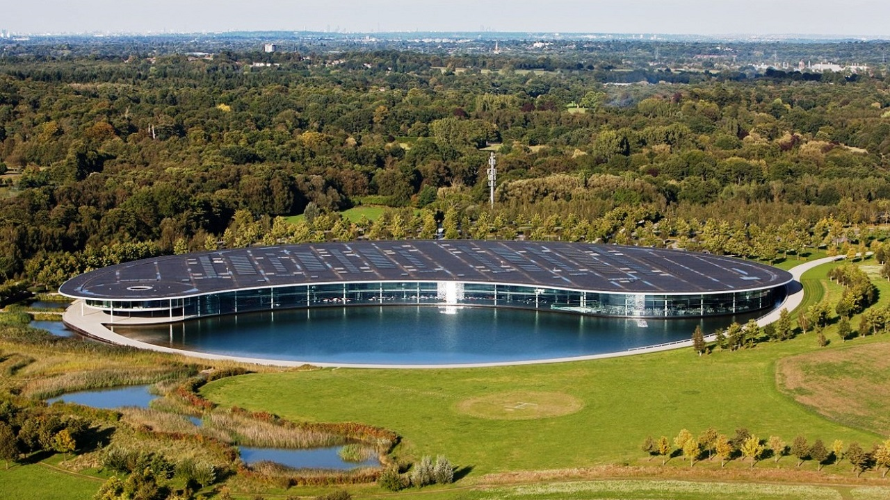

Bruce McLaren
Bruce McLaren, nascido em Auckland, Nova Zelândia, em 30 de agosto de 1937,
demonstrou sua paixão pelo automobilismo desde jovem. Sua jornada no mundo
das corridas começou em sua terra natal, onde rapidamente se destacou como
um talentoso piloto. Aos 22 anos, ele decidiu seguir sua carreira internacionalmente
e se mudou para a Inglaterra.
Em solo britânico, Bruce McLaren se juntou à equipe Cooper e, em 1959, conquistou
sua primeira vitória na Fórmula 1. Seu sucesso nas pistas o levou a fundar
sua própria equipe de corridas, a McLaren Racing, em 1963. A equipe McLaren
rapidamente se tornou uma força a ser reconhecida na Fórmula 1, conquistando
vários campeonatos de construtores e pilotos ao longo dos anos.
Bruce McLaren não apenas era um visionário como construtor de carros de corrida,
mas também continuou sua carreira como piloto, obtendo vitórias em várias categorias,
incluindo corridas de resistência, como as 24 Horas de Le Mans. Sua destreza técnica
e inovação desempenharam um papel fundamental no sucesso da equipe McLaren. Ele
introduziu melhorias em aerodinâmica e engenharia que ajudaram a equipe a obter um
desempenho excepcional nas pistas.
A carreira de Bruce McLaren foi cortada tragicamente curta em 1970, quando ele faleceu
em um acidente durante testes de carros de corrida no circuito de Goodwood, na Inglaterra.
No entanto, seu legado como piloto e construtor de carros de corrida perdura até hoje,
com a marca McLaren continuando a ser sinônimo de inovação, desempenho e sucesso no mundo
do automobilismo.

Historia da Mclaren
A história da McLaren no mundo automotivo começa com sua fundação em 1963 por Bruce McLaren,
um talentoso piloto de corridas neozelandês. A equipe de corridas McLaren Racing fez sua
estreia na Fórmula 1 em 1966 e logo se destacou no cenário internacional das corridas,
acumulando vitórias e títulos.
A equipe McLaren conquistou vários campeonatos de construtores e pilotos na Fórmula 1 ao longo
dos anos, com pilotos lendários como Niki Lauda, Alain Prost, Ayrton Senna e Lewis Hamilton
pilotando seus carros. A McLaren se tornou uma das principais forças na Fórmula 1 e um sinônimo
de excelência nas corridas.
No entanto, a McLaren também se aventurou no mundo dos carros de rua. Em 1992, lançou o lendário
McLaren F1, um dos carros esportivos mais icônicos já produzidos. Com seu design revolucionário
e velocidade máxima recorde, o F1 estabeleceu a McLaren como uma fabricante de carros esportivos
de prestígio.
A inovação é uma parte central da identidade da McLaren, com a marca incorporando tecnologias de
Fórmula 1 em seus carros esportivos de rua. Além disso, a empresa abraçou a tecnologia híbrida em
seus modelos mais recentes, melhorando a eficiência e o desempenho.
Hoje, a McLaren é reconhecida globalmente por seus carros de alta performance e qualidade, com uma
base de fãs dedicada em todo o mundo. A marca continua a competir na Fórmula 1, mantendo sua tradição
de sucesso nas corridas, ao mesmo tempo que continua a produzir carros esportivos que são desejados
por entusiastas automotivos em busca de uma experiência de direção única e emocionante. A McLaren é
uma verdadeira lenda no mundo automotivo, combinando sua herança no automobilismo com a produção de
carros esportivos de elite.